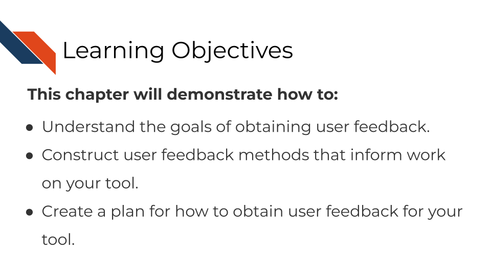

Chapter 9 Obtaining user feedback

9.1 The goal of user feedback
How do you know if your code is working? You test it and get feedback! Similarly, how do you know if your tool is working for your user? Ask them for feedback!

9.2 How to collect informative user feedback
9.2.1 User contact method
At the most basic level, you need to provide your users a way to alert you if something with your tool is not working appropriately.
It may sound disappointing that a user has found a problem but this is something to be happy about!
- This means someone is interested and invested in using your tool!
- They’ve identified a way to improve your tool to make it even better!
Providing a method of contact to your users doesn’t mean you need to give users your personal email. In fact, that is probably not the most practical way to keep user queries organized.
Example contact method ideas:
- Have a link to a form for users to submit (Google forms are free).
- Direct users to file a GitHub issue.
- Have a separate email inbox that you have a notification set up for.
- Have a Slack channel that you direct users to.
Whatever method of contact you provide your users, just make sure its something that works for you and your team to respond to.
9.2.2 Interviews and usability testing
In whatever contact method you settle on, give your users a way to indicate if they are willing to chat with you or do testing to provide even more feedback.
Depending on your time and resources you can do a lot with usability testing. This excellent article by Csontos (2019) takes us through how to conduct usability testing which we will echo the main points of here.
What to use usability testing for:
- Identifying main issues in the usability of a product
- Checking if users understand the steps to carry out a task and the navigation
- Observing how easily and quickly they accomplish tasks
- Validating the value proposition of an app or website – do your potential customers understand it?
To summarize the steps laid out by Csontos (2019) for conducting usability research:
Step 1) Plan out your study - clarify what you want to learn and write a plan and script.
- What main questions about your tool do you have? – try to narrow down to one or two priority questions that you can design a test for.
- What tasks would a user participant perform that would best inform you about your questions?
- Write out a script that you would use to conduct testing.
See more advice about writing usability testing scripts here:
- Steve Krug’s usability testing script template from Krug (2010).
- Gitlab’s advice about usability testing script from GitLab (n.d.).
- Gitlab’s usability testing template script.
- Pilot your test: before you use your test on a potential user, borrow a colleague or other internal person to run through your plan and script for a rehearsal.
- Conduct the tests!
- If you are able to record the testing sessions, make sure to ask the participant’s permission.
- Use this checklist from Krug (2010) to check if you are prepared!
A very important point from Csontos (2019):

You can use these prompts from Krug (2010) to help you know what to say to help create a non-judgmental atmosphere for testing.
Step 3) Find user participants.
Who is interested in available for being your test subjects? You might be able recruit people from setting up a feedback form, but you also may use word of mouth and ask around. You could also try advertising your need for participants through Twitter, LinkedIn or some other social media platform.
Step 4) Analyze & Report Sit down with your notes and recordings, look for patterns.
More reading on usability testing:
- How to run moderated usability testing HotJar (2019).
- Usability Testing 101 Moran (2019).
- See Krug (2010) ’s list of downloadable usability resources.
- See this case study for a user designer conducting user research on a bioinformatics tool (Pavelin et al. 2012).
- For even more reading, you could buy (this book by Krug 2010)(https://www.amazon.com/Rocket-Surgery-Made-Easy-Yourself-ebook/dp/B002UXRGNO).
9.3 Exercise 1: Create a plan for user feedback for your tool
Set up a method of contact for your users. We have a mock feedback user form set up here. This form shouldn’t be used as is, but could be tailored to more specifically ask questions about your tool that you are looking to get information about.
9.4 Exercise 2: Determine a plan for usability testing
Go through All You Need to Know to Run Successful Usability Testing and construct a plan for usability testing following the steps we discussed above from the article (Csontos 2019). Think about what in your tool you want to test and write a plan for it.
For all cartoons:
Avataars by https://getavataaars.com/.
Icons by https://thenounproject.com/ License CC BY-NC-ND 2.0.
Emojis by OpenMoji License: CC BY-SA 4.0.↩︎